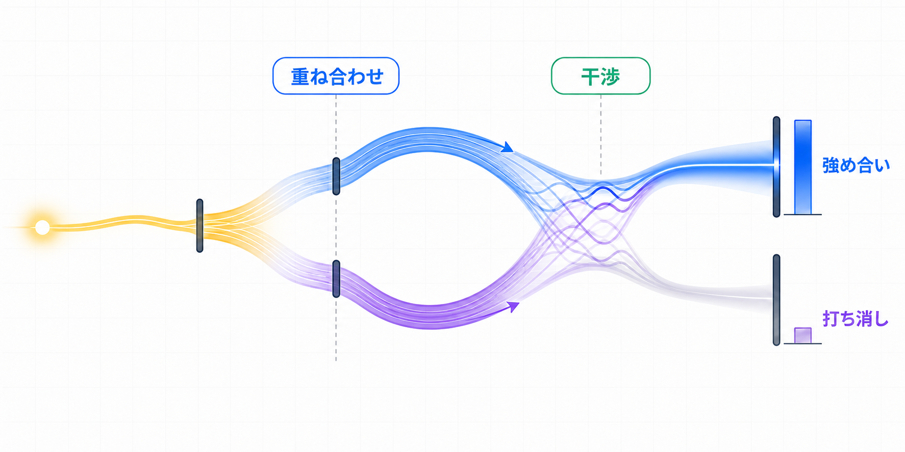

第3章. 重ね合わせと干渉とは何か？
第1章と第2章では、1つのキュービット状態を |0⟩ 方向の振幅と |1⟩ 方向の振幅として読んできました。
ここからは、振幅が1か所だけに留まらず、複数の方向に置かれたあと、同じ測定結果へ再び寄与する状況を見ていきます。
ここから少し抽象的に感じるかもしれません。今は重ね合わせと干渉を完璧に暗記しようとせず、振幅が「分かれる」ことと「再び出会う」ことだけを先につかんでください。
まず、なぜこの2つの概念が一緒に出てくるのかをつかみます。ごく単純に言えば、重ね合わせは振幅が1つの方向だけでなく、複数の方向に同時に置かれている状態です。
干渉は、そうして分かれた振幅の寄与が同じ測定結果で再び出会い、足し合わされたり打ち消し合ったりする現象です。

まず振幅がどこに置かれているかを見ます
|0⟩ 状態は、測定結果 0 の振幅が 1 で、測定結果 1 の振幅が 0 の状態です。
つまり、状態の振幅はすべて |0⟩ 方向に置かれています。
この状態をすぐに測定すると、測定結果 0 が 100% 出ます。
まだ振幅が分かれていないため、ここでは重ね合わせや干渉を話す状況ではありません。
重ね合わせは振幅が複数の基底状態方向に置かれた状況です
あるゲートは、1つの方向に集まっていた振幅を複数の基底状態方向へ送ります。
たとえば |0⟩ 状態に H ゲートを適用すると、状態は次のように変わります。
ここでは |0⟩ 方向にも振幅があり、|1⟩ 方向にも振幅があります。
このように2つ以上の基底状態が1つの状態を作ることに参加しているなら、その状態を重ね合わせ状態と呼びます。
| 状態 | |0⟩ 方向の振幅 | |1⟩ 方向の振幅 | 読み方 |
|---|---|---|---|
|0⟩ | 1 | 0 | 1つの方向だけに振幅があります |
H|0⟩ | 1/√2 | 1/√2 | 2つの方向に振幅があります |
測定前の状態そのものが、複数の基底状態方向に振幅を持っているという意味です。
干渉は分かれた振幅の寄与が同じ結果で再び出会うときに生まれます
重ね合わせ状態にもう一度ゲートを適用すると、各基底状態方向にあった振幅が、複数の測定結果へ寄与を送ることがあります。
そのとき、別々の出発点から来た振幅の寄与が、同じ測定結果に届くことがあります。
|0⟩ 方向にあった振幅が、測定結果 0 と 1 へ寄与を送ります。
|1⟩ 方向にあった振幅も、測定結果 0 と 1 へ寄与を送ります。
同じ符号と同じ位相で届いた振幅の寄与は、互いに強め合います。
反対に、符号や位相が逆向きに合わさる振幅の寄与は、互いに打ち消し合うことがあります。
振幅の寄与が同じ向きに足されます
その測定結果の振幅が大きくなり、測定確率も大きくなります。
振幅の寄与が互いを消します
その測定結果の振幅が消え、測定確率も 0 になります。
H ゲートを2回適用する例を先に見ておきます
あとで H ゲートを詳しく学ぶとき、|0⟩ 状態に H ゲートを1回適用すると重ね合わせ状態が作られることを計算します。
さらに同じキュービットへ H ゲートをもう1回適用すると、振幅の寄与が強め合ったり打ち消し合ったりして、状態が |0⟩ に戻ることも見ます。
1回目のHゲートは、1つの方向の振幅を2つの方向へ分けます
この段階で、|0⟩ 方向と |1⟩ 方向の両方が状態ベクトルに参加します。
2回目のHゲートは、2つの振幅の寄与をもう一度出会わせます
この段階で、|0⟩ 側の振幅は強め合い、|1⟩ 側の振幅は打ち消し合います。
重ね合わせは振幅が複数の基底状態方向に置かれた状況であり、干渉はその振幅の寄与が同じ測定結果で再び出会うときに現れる計算上の効果です。